¿Tienes michis?
¿Planeas tener michis?
¿Qué michis son tus favoritos?
Si eres fan de los tiernos gatitos y los gatitos bebés aquí te dejamos algunas cositas que te podrían interesar
 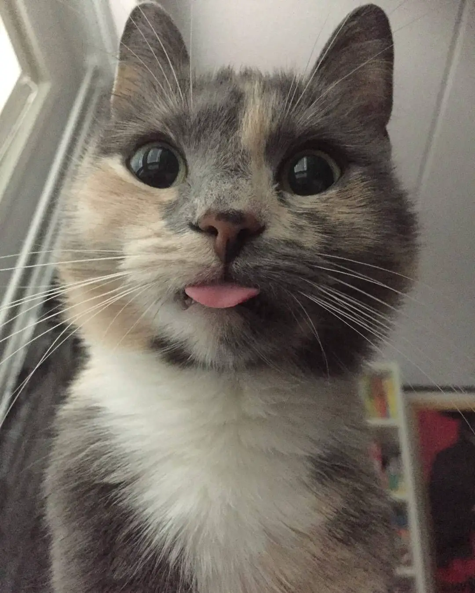
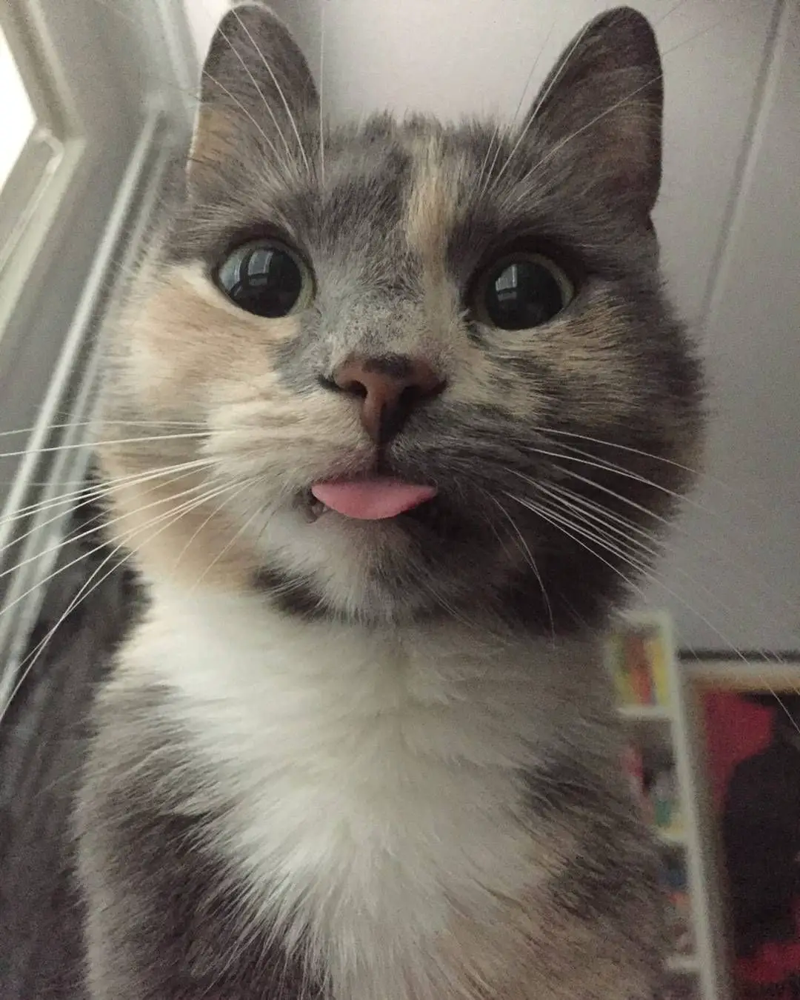

Click en Tik-Tok para ver más adorables gatitos 😸

¡Claro que no nos olvidamos de ti! amante de los Michis divertidos. Aquí tienes unos cuantos para ti
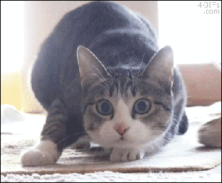

Click en Tik-Tok para ver gatitos graciosos 😹
Y por supuesto algunos memes para TODOS los humanos "Karen"
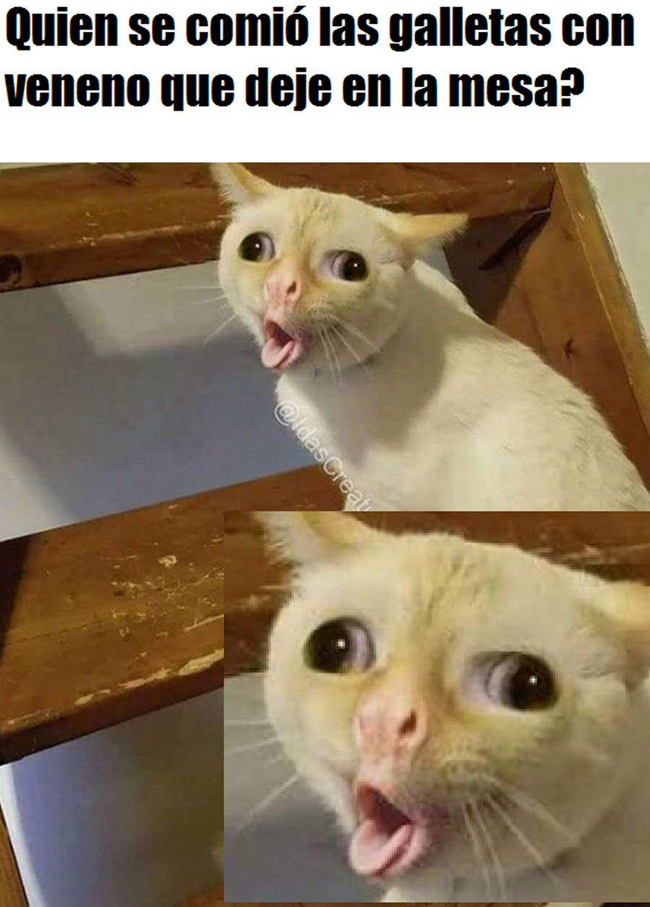 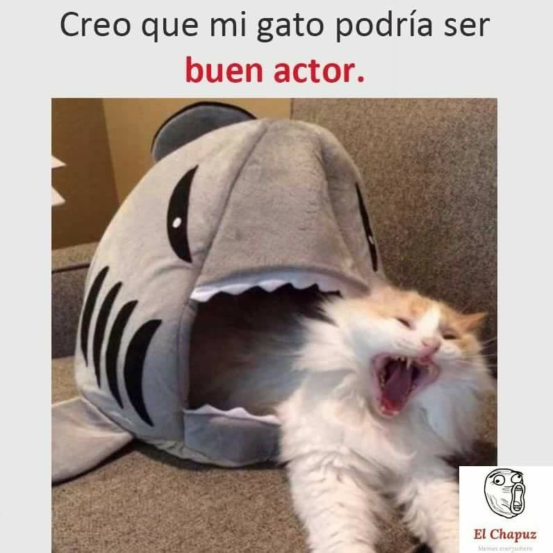 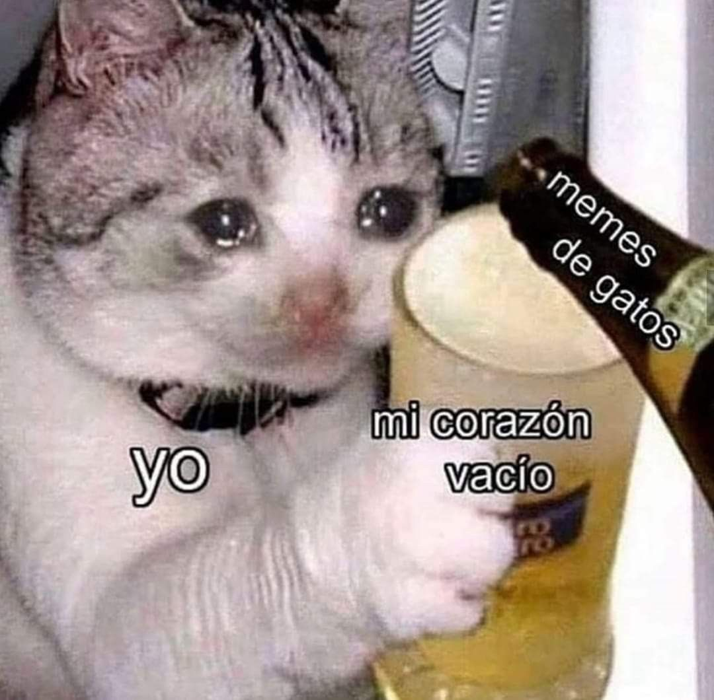Click en Facebook para un grupo para ti

Lo más importante de tener un Michi es cuidarlo.
Veterinario 🩺
Vacunas 💉
Las vacunas son fundamentales para cuidar la salud de nuestros amigos gatunos mascota. Con ellas prevenimos y evitamos enfermedades tanto víricas como bacterianas que, en algunos casos, pueden llegar a ser mortales. Las vacunas para gatos son un tratamiento preventivo imprescindible que prepara a su sistema inmunitario para hacer frente a diferentes infecciones. Para más información click en la inyección

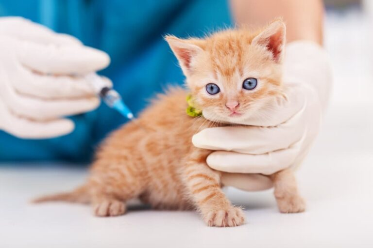Desparasitación
Los gatos son animales muy limpios, prestan mucha atención a su higiene pero eso no significa que estén protegidos frente a parásitos como las pulgas. Si tu gato sale al exterior o vive con otros animales es susceptible a padecerlos. Estos parásitos tanto internos como externos pueden afectar a nuestro gato y causarle enfermedades graves. Por este motivo es fundamental desparasitar de forma regular a nuestra mascota. Para más información haz click en las pildoras.
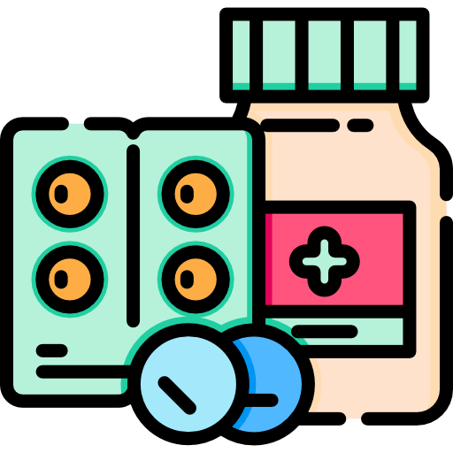
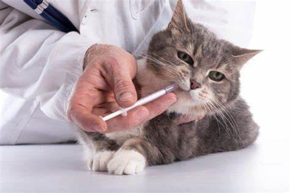Entretenimiento 🐈
Paseos
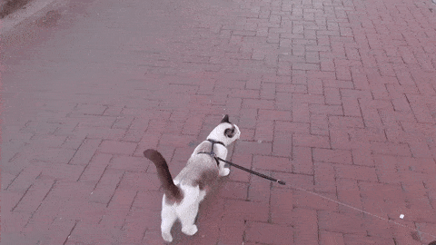Juguetes 😸
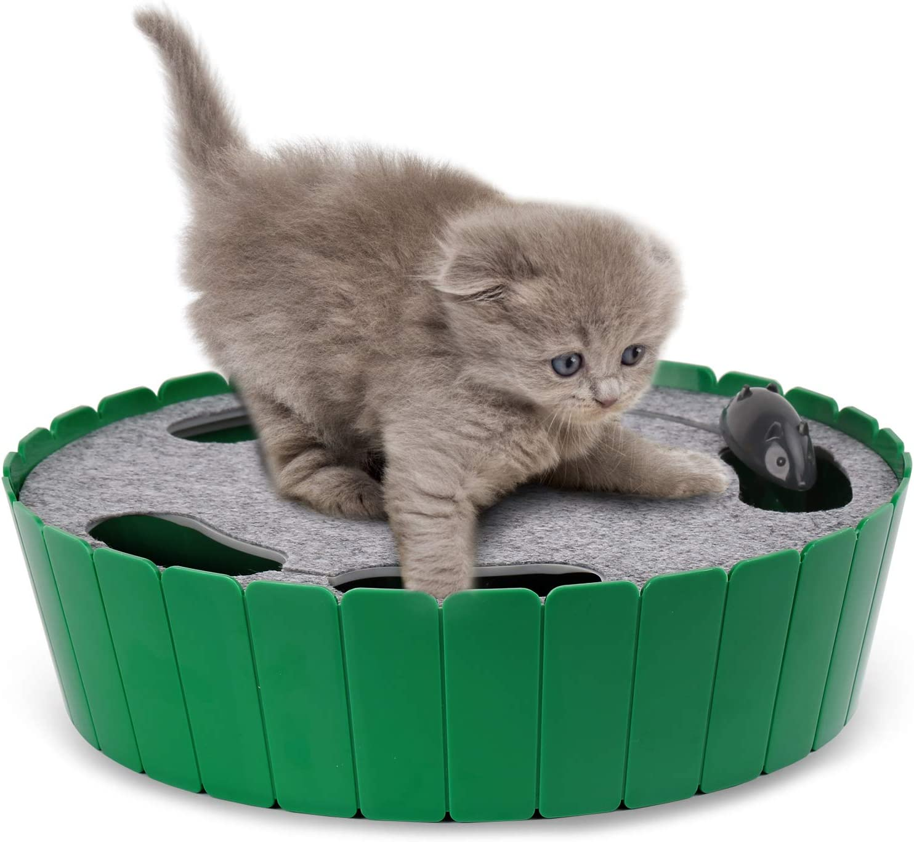Juegos
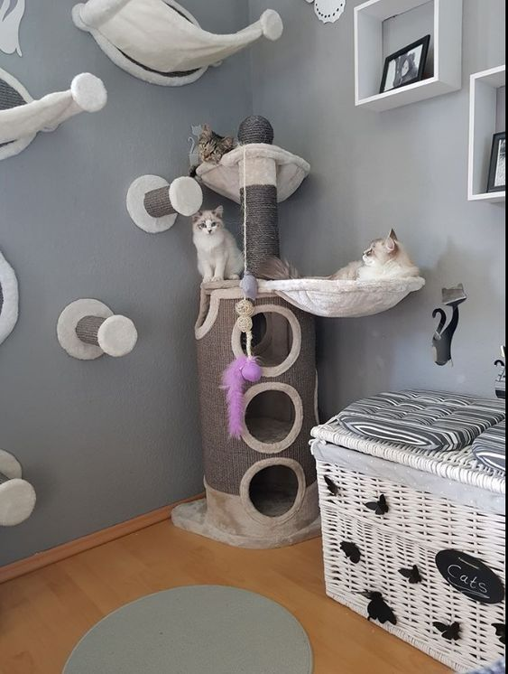
Siempre hay un veterinario cerca de ti. Haz click en mi patita

Los gatos por naturaleza son animales sumamente independientes, curiosos y amantes de las nuevas aventuras. Muchas personas piensan que los gatos necesitan de ambientes abiertos y libertad para ser felices y mantener su instinto salvaje, pero hay muchos dueños de gatos que no se sienten cómodos o sienten temor a permitirles salir a la calle. Dejar salir a un gato puede ser beneficioso para su salud física y emocional, pero al mismo tiempo, es importante hacerlo con la mejor de las precauciones y estar al tanto de las posibles implicaciones que esto puede traer.
Compra juguetes para tu Michi 😹. Haz click en el carrito